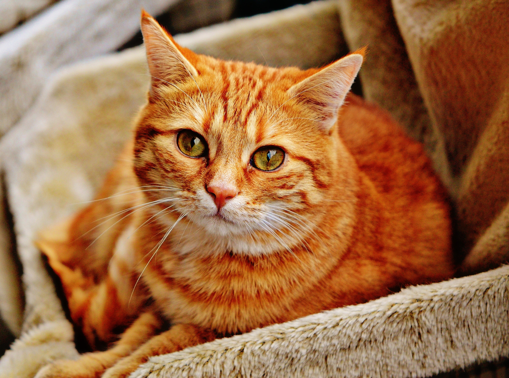

Cat
The cat (Felis catus, or Felis silvestris catus, literally "woodland cat"), often referred to as the domestic cat to distinguish from other felids and felines, is a small, typically furry, carnivorous mammal. It is often called house cat when kept as indoor pet or feral/feral domestic cat when wild. It is often valued by humans for companionship and for its ability to hunt vermin. There are more than seventy cat breeds recognized by various cat registries.
Cats are similar in anatomy to the other felids, with a strong flexible body, quick reflexes, sharp teeth and retractable claws adapted to killing small prey. Cat senses fit a crepuscular and predatory ecological niche. Cats can hear sounds too faint or too high in frequency for human ears, such as those made by mice and other small animals. They can see in near darkness. Like most other mammals, cats have poorer color vision and a better sense of smell than humans. Cats, despite being solitary hunters, are a social species, and cat communication includes the use of a variety of vocalizations (mewing, purring, trilling, hissing, growling and grunting) as well as cat pheromones and types of cat-specific body language.
Cats have a high breeding rate. Under controlled breeding, they can be bred and shown as registered pedigree pets, a hobby known as cat fancy. Failure to control the breeding of pet cats by spaying and neutering, as well as the abandonment of former household pets, has resulted in large numbers of feral cats worldwide, requiring population control.
Turkish Van
The Turkish Van is a semi-long-haired breed of domestic cat, which was developed in the United Kingdom from a selection of cats obtained from various cities of modern Turkey, especially Southeast Turkey.
Scottish Fold
The Scottish Fold is a breed of domestic cat with a natural dominant-gene mutation that affects cartilage throughout the body, causing the ears to "fold, ” bending forward and down towards the front of the head, which gives the cat what is often described as an "owl-like" appearance.
American Bobtail
The American Bobtail is an uncommon breed of domestic cat which was developed in the late 1960s. It is most notable for its stubby "bobbed" tail about one-third to one-half the length of a normal cat's tail.
Abyssinian cat
The Abyssinian is a breed of domestic short-haired cat with a distinctive "ticked" tabby coat, in which individual hairs are banded with different colors. The breed is named for Abyssinia, from which it supposedly originated.
Maine Coon
The Maine Coon is one of the largest domesticated cat breeds. It has a distinctive physical appearance and valuable hunting skills. It is one of the oldest natural breeds in North America, specifically native to the state of Maine, where it is the official state cat.
Persian cat
The Persian cat is a long-haired breed of cat characterized by its round face and short muzzle. It is also known as the "Persian Longhair" in the English-speaking countries. In the Middle East region they are widely known as "Iranian cat" and in Iran they are known as "Shirazi cat".